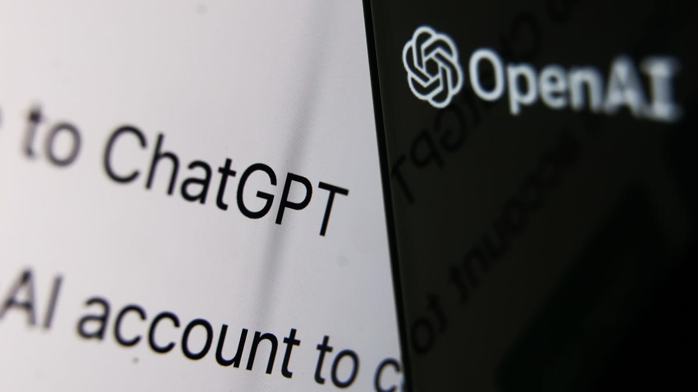
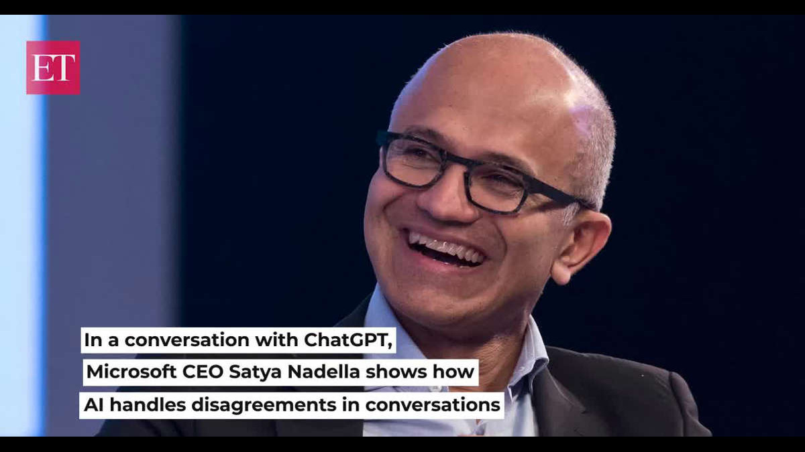

ChatGPT is an artificial intelligence-based chatbot, which can have regular conversations with humans on various subjects. Since its official launch in November 2022, the application has been trending for the kind of responses it is offering for various day-to-day problems present to it and the results have been impressive. But on Thursday, the chatbot was corrected by Microsoft Executive Chairman and CEO Satya Nadella over a popular food item - biryani. Mr Nadella, who is in Bengaluru for Microsoft's Future Ready Leadership Summit, was speaking about the importance of technology and how it is influencing our lives.
 